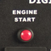
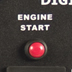

Boliy 3600SI/E - Electric Start
 |
|
 
 |
|
| Click on a picture for a larger view. | |
{kind=link}
{kind=link}
{kind=link}
Introducing the new 3600SI/E with push button start. Adding only 7 pounds to the overall weight, the electric start model still has the highest power to weight ratio on the market. The 3600SI/E is very easy to start, and carry.
The Boliy 3600SI/E is a true Digital Signal Processing (DSP) inverter generator featuring an advanced high tech micro processor. The true DSP results in a power conversion rate 20% higher than comparable transistor induced technology inverter generators.
The voltage is constantly adjusted to maintain 120V by the computer inverter module while the lightweight compact design makes the Boliy 3600SI/E ideal for transportation and storage. Boliy digital generators are equipped with the unique on-demand smart-throttle, automatically regulating the engine speed according to the load. This results in 40% less fuel consumption when compared to traditional generators and extended running time as well.
The Boliy engine also features special cylinder coating for strength and efficiency. Boliy digital inverter generators have a new two-tiered noise dampening system, consequently the dB emitted is 4 to 8 times quieter than conventional generators. This meets the new noise level standards that many states, municipalities, and state and national parks have adopted.
At only 75 lbs. with a built in RV 30 Amp receptacle, this generator provides portable, quiet, and efficient clean power to easily power a roof mount air conditioner or microwave.
- Lowest weight - 75 lbs
- Environmentally friendly
- DSP Inverter Technology
- On Demand Smart Throttle
- 25 Amp Circuit with 30 Amp RV Plug Standard
- 53 to 58 dB at 1/4 load
- Low decibel level